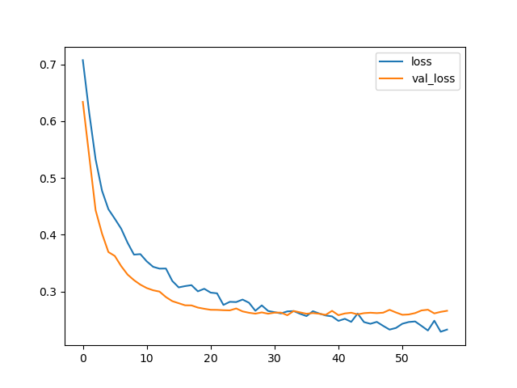

Introduction
In this section, we will use random forest and neural network to train and test our features against the target.
Random Forest Example
We select all the features against the target variable.
| Precision | Recall | F1-score | Support | |
|---|---|---|---|---|
| Dropout | 0.85 | 0.73 | 0.79 | 285 |
| Graduate | 0.81 | 0.95 | 0.87 | 459 |
| Accuracy | 0.79 | 885 | ||
| Macro Avg | 0.72 | 0.68 | 0.69 | 885 |
| Weighted Avg | 0.77 | 0.79 | 0.77 | 885 |
Neural Network Example
We provide the input nodes of 34 features with a relu activation function, a hidden layer with 17 nodes with a relu activation function and a sigmoid function in the output layer to train the data.
| Precision | Recall | F1-score | Support | |
|---|---|---|---|---|
| Dropout | 0.90 | 0.83 | 0.86 | 435 |
| Graduate | 0.89 | 0.94 | 0.62 | 654 |
| Accuracy | 0.90 | 1089 | ||
| Macro Avg | 0.90 | 0.88 | 0.89 | 1089 |
| Weighted Avg | 0.90 | 0.90 | 0.89 | 1089 |
Model Evaluation
After implementing efficient feature engineer (eliminating outliers and deleting repeating features) and deploying Deep Learning with the support of Dropout and Early Stopping, I was able to increase the accuracy from 0.79 to 0.90.
The figure shown loss and val_loss comparison.
